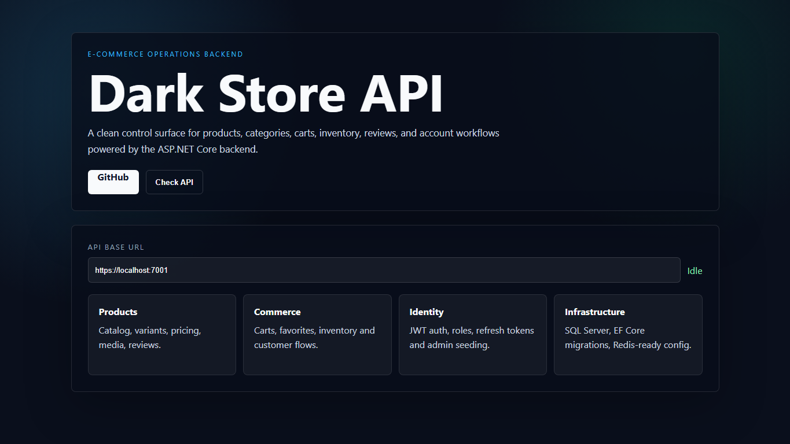
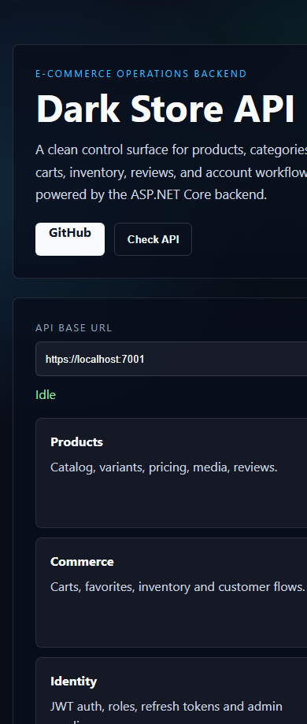

Dark Store API
E-commerce backend
A layered ASP.NET Core backend for products, categories, carts, favorites, inventory, reviews, authentication, vendor/customer roles, uploads and email infrastructure.
1. Contexte du projet
The backend supports a dark-store/e-commerce product. The frontend included for the portfolio is a simple API dashboard used to present the backend modules and test API reachability.
2. Objectifs
- Product catalog
- Inventory workflow
- Cart and favorites
- JWT authentication
- Media upload
- Admin/customer/vendor roles
3. Acteurs
- Administrator
- Customer
- Vendor
- Marketer
4. Interfaces et fonctions principales
| Frontend API dashboard | Shows API base URL, backend modules and a check button for local/deployed API connectivity. |
| Swagger/API interface | Developer-facing documentation for testing endpoints when the backend is running. |
| Authentication endpoints | Register, login, refresh token and role-protected actions. |
| Product endpoints | Manage product catalog, images, categories, variants, prices and stock. |
| Customer endpoints | Cart, favorites, reviews and contact messages. |
5. Technologies utilisees
ASP.NET Core 9Entity Framework CoreSQL ServerJWTRedis-ready config
6. Travail en equipe / collaboration
Collaboration project: delivered in a team context with shared backend responsibilities, API integration work and coordination around product, order and identity modules.
7. Captures d'ecran reelles


8. Liens
Repository: https://github.com/tayebzitouni/Dark_Store_Back
Demo: Frontend preview included in the repository for local presentation.